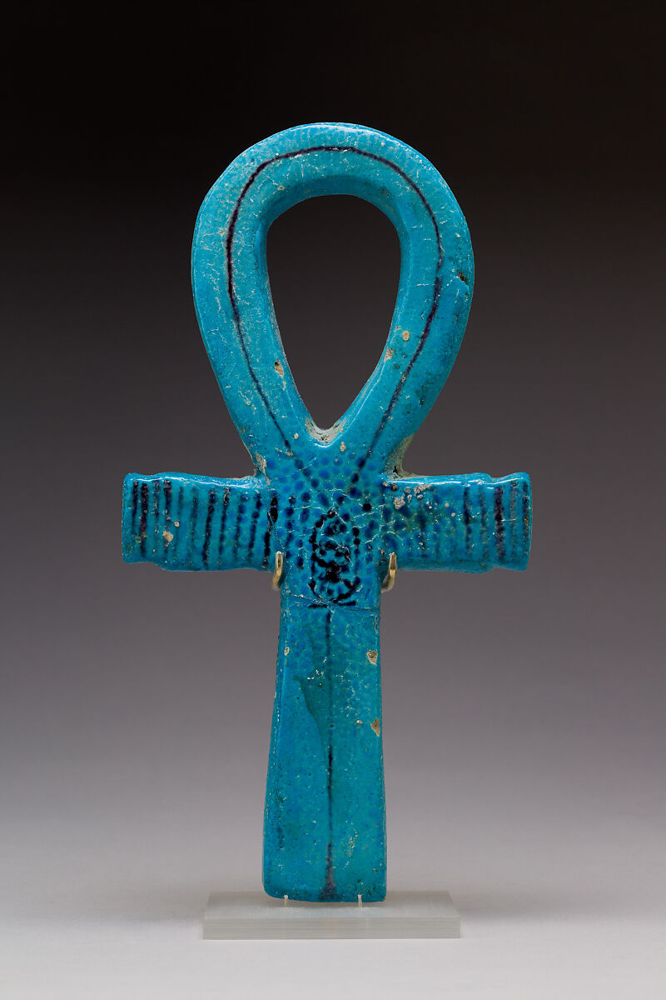
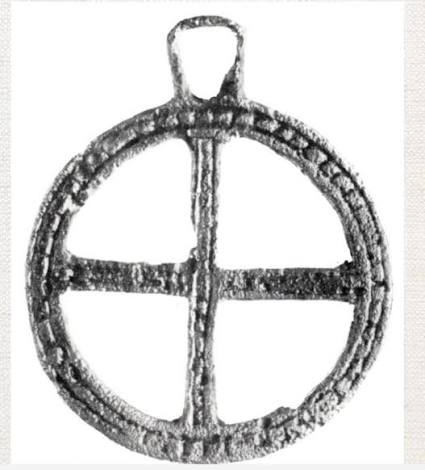

Here, you will find the oldest variations of the cross, including the ankh representing life, the swastika representing good fortune, and the sun cross, worshiping the sun.

The Ankh
The Swastika — ancient symbol of good fortune

The Sun Cross — ancient solar worship